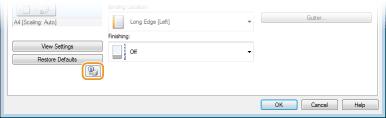
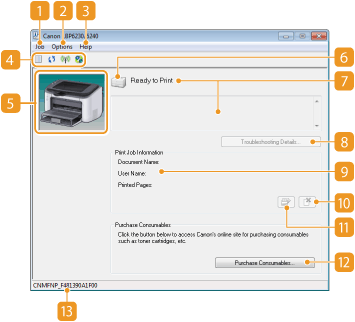

Printer Status Window
The Printer Status Window is a utility that allows you to check the machine's status, view error information, and make settings related to the machine, such as power saving settings. You can also use it for operations such as cancelling a print job or printing a list of the machine's settings. The Printer Status Window utility is installed on your computer automatically when you install the printer driver (Printer Driver Installation Guide).

Displaying the Printer Status Window
Select the machine by clicking  in the system tray.
in the system tray.
in the system tray. 
|
|
Automatic Display of the Printer Status WindowThe Printer Status Window is displayed automatically when an error occurs during printing.
* You can change the setting that determines when the Printer Status Window is displayed automatically. Change it with the [Options] menu
If you are using Windows 8/Server 2012Display the Printer Status Window after moving to the desktop.
|
|
Displaying from the Printer Driver
|
|
Click
 in the printer driver screen. in the printer driver screen. |
Parts of the Screen and Their Functions
This section provides an outline of the main screen. For detailed descriptions of the dialog boxes that can be displayed with the controls and menus in this screen, see the Help. [Help] menu

 [Job] menu
[Job] menu
Allows you to check documents that are printing or waiting. You can also select documents and cancel printing.
 [Options] menu
[Options] menu
Allows you to execute maintenance functions, such as printing setting lists or cleaning the fixing unit, and to make machine settings, such as power saving settings. You can also check information such as the total number of pages printed.
 [Help] menu
[Help] menu
Displays Help about the Printer Status Window and version information.

You can also display the Printer Status Window Help by clicking the [Help] button in the various dialog boxes. However, some dialog boxes do not have a [Help] button.
 Toolbar
Toolbar
 (Print Queue)
(Print Queue)Displays the print queue, a Windows function. See the Windows Help for more information about the print queue.
 (Refresh)
(Refresh)Refreshes the Printer Status Window with the latest information.
 (Wireless LAN Status)
(Wireless LAN Status) Allows you to check the connection status (signal strength) of the wireless LAN.
 (Remote UI)
(Remote UI) Starts the Remote UI. Using the Remote UI
 Animation area
Animation area
Displays animations and illustrations about the machine's status. After an error occurs, this area may also display a simple explanation of how to deal with the error.
 Icon
Icon
Displays an icon that indicates the machine's status. The normal status is  but when an error occurs, the display changes to one of
but when an error occurs, the display changes to one of  /
/  /
/  , depending on the message.
, depending on the message.
but when an error occurs, the display changes to one of / / , depending on the message. Message area
Message area
Displays messages about the machine's status. If an error or warning occurs, this area displays an explanation beneath the error message or warning, together with information about how to deal with the problem. When an Error Message Appears
 [Troubleshooting Details]
[Troubleshooting Details]
Displays troubleshooting information for problems described by messages.
 [Print Job Information]
[Print Job Information]
Displays information about the document that is currently being printed.

 (Cancel Job)
(Cancel Job)
Cancels the printing of the document currently being printed.

 (Continue/Retry)
(Continue/Retry)
When an error has occurred, but printing can be continued, this button allows you to clear the error and resume printing. However, if you use the Continue/Retry function to resume printing, partially printed pages or other improper printing may occur.
 [Purchase Consumables]
[Purchase Consumables]
If you click [Purchase Consumables]  select your country or region click [OK], a Canon Web site page is displayed where you can find information about purchasing consumables.
select your country or region click [OK], a Canon Web site page is displayed where you can find information about purchasing consumables.
 Status bar
Status bar
Displays the connection destination (port name) of the Printer Status Window.